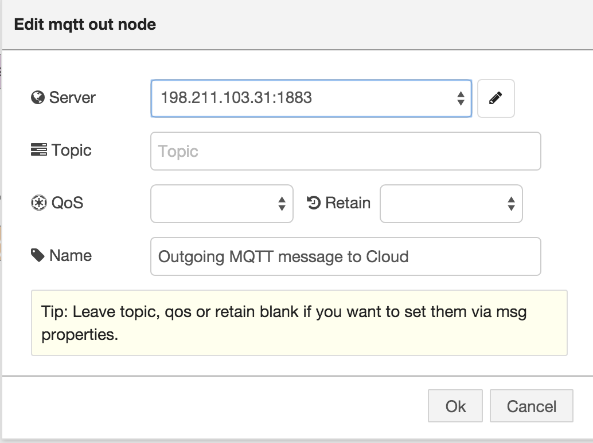

Node-RED Application on Gateway
Install and Run Node-RED on Gateway
If you have already installed Node-RED on your gateway then you can skip installation step and directly run node-red.
SSH into your gateway. For more information on steps to Login gateway you can check Step 3 of Module 1
Install Node-RED with,
$ npm install -g node-red
You should now run the Node-RED server by typing,
$ node-red
To access Node-RED in your browser, click on http://192.168.1.1:1880
Create Node-RED application on gateway
-
Create following flow using mqtt (input), debug, function and mqtt (output).

-
Configure mqtt(input) node. Add new Server with server as "localhost" and port number as 1883. (Port 1883 is default assigned MQTT port.) Add topic for mqtt where sensors are publishing data. In this example we have assumed that sensors are publishing data on topic
sensors/{{Sensor Id}}/data(i.e sensors/temperature/data where temperature is Sensor Id.)
-
Configure Function node in a way that collects the data for 5 consecutive values, find an average out of it and send that reduced average data to cloud. You can also look into following given code. Change gatewayId on 2nd line of following code with last 4 digit of your Gaterway Wireless Mac Address. (i.e Change 1234 to new 4 digit wireless mac address)
The function node will look like below image.

-
Configure Mqtt(output) to send data to cloud. Add new Server with server as "198.211.103.31" and port number as 1883. This is server address of our IoT cloud. Leave topic,qos and retain blank because we have already setup all these properties via message properties. That node will look like below image.

-
Configure Mqtt(output) to send data in cloud. Add new Server with server as "198.211.103.31" and port number as 1883. This is server address of our IoT cloud. Leave topic,qos and retain blank because we have already setup all these properties via message properties. That node will look like below image.
- The Debug node causes any message to be displayed in the Debug sidebar. By default, it just displays the payload of the message, but it is possible to display the entire message object.
-
The final flow of our configuration will look like below shown image. Names of nodes might differ from what you have assigned.

-
Click the Deploy button to deploy this flow to your gateway. The button to the right of the node will toggle its output on and off so you can de-clutter the debug window.
Node-RED Flow Source
Any flow in Node-RED can be exported / imported as a JSON object. The code for the above flow is displayed below. To import it into your work space copy the text, hit Ctrl-I in the Node-RED workspace and paste the text in.
Your gateway is ready and sending data to cloud for visualization